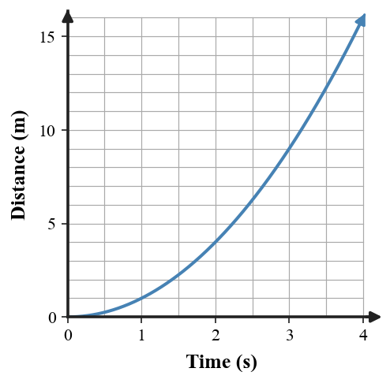

1. In a scaled velocity-vector diagram, what does magnitude mean?
2. What must be true for two velocity vectors to represent exactly the same velocity?
3. A motion diagram uses positions marked every second. What pattern would represent slowing down?
4. Which representation shows numerical motion values organized by time: a data table, vector arrow, or written story?
5. What is the purpose of a resultant vector in a combined-motion diagram?
6. A drone’s velocity arrow changes from 4 cm east to 4 cm north using the same scale. Compare speed, direction, velocity, and acceleration.
7. A table shows distances 0, 3, 6, 9, 12 m at one-second intervals. Predict the shape of the matching distance–time graph and the motion-diagram spacing.
8. A motion diagram’s gaps are 1 m, 3 m, 5 m, and 7 m over equal time intervals. Describe the motion and explain what a matching distance–time graph should do.
9. Use the distance–time graph. Describe the motion shown by the changing slope and state what dot-spacing trend should match it.

10. A student labels two same-length, opposite-direction arrows as “same velocity.” Explain the error and rewrite the claim correctly.
11. A table shows equal distance increases each second, but a graph drawn from it curves upward. Critique the graph and describe the corrected graph shape.
12. A classmate says, “If the vectors have the same length, the motion model is consistent.” Evaluate the statement using an example in which direction changes.
13. A velocity vector is an arrow showing
14. Two vectors match exactly when they have
15. Equal-length arrows that rotate from east to north show
16. Which feature should be checked to decide whether velocity changes?
17. In an equal-time motion diagram, gaps that become smaller indicate
18. A straight distance–time line with constant slope is evidence of
19. If a table gives equal distance increases but the graph curves upward, which part is inconsistent?
20. A strong model critique should